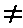

All the programs we have seen so far have been pretty predictable - they went straight through the instructions, and then went back to the beginning again. This is not very useful. In practice the computer would be expected to make decisions and act accordingly. The instruction used has the form . . . IF something is true, or not true THEN do something else.
For example, use NEW to clear the previous program from the computer and type in and run this program. (This is clearly meant for two people to play!)
10 REM Guess the number
20 INPUT a: CLS
30 INPUT "Guess the number", b
40 IF b=a THEN PRINT "That is correct": STOP
50 IF b<a THEN PRINT "That is too small, try again"
60 IF b>a THEN PRINT "That is too big, try again"
70 GO TO 30
You can see that an IF statement takes the form
IF condition THEN . . .
where the '. . .' stands for a sequence of commands, separated by colons in the usual way. The condition is something that is going to be worked out as either true or false: if it comes out as true then the statements in the rest of the line after THEN are executed, but otherwise they are skipped over, and the program executes the next instruction.
The simplest conditions compare two numbers or two strings: they can test whether two numbers are equal or whether one is bigger than the other; and they can test whether two strings are equal, or (roughly) one comes before the other in alphabetical order. They use the relations =, <, >, <=, >= and <>.
= means 'equals'. Although it is the same symbol as the = in a LET command, it is used in quite a different sense.
<(SYMBOL SHIFT with R) means 'is less than' so that
1 < 2 -2 < -1 - 3 < 1 are all true, but 1 < 0 0 < -2 are false.
Line 40 compares a and b. If they are equal then the program is halted by the STOP command. The report at the bottom of the screen 9 STOP, statement, 30:3 shows that the third statement, or command, in line 30 caused the program to halt, i.e. STOP.
Line 50 determines whether b is less than a, and line 60 whether b is greater than a. If one of these conditions is true then the appropriate comment is printed, and the program works its way to line 70 which tells the computer to go back to line 30 and start all over again.
The CLS, clear screen, command in line 20 was to stop the other person seeing what you put in.
So >(SYMBOL SHIFT with T) means 'is greater than', and is just like < but the other way round. You can remember which is which, because the thin end points to the number that is supposed to be smaller.
<= (SYMBOL SHIFT with Q - do not type it as <followed by =) means 'is less than or equal to', so that it is like < except that it is true even if the two numbers are equal: thus 2<=2 is true, but 2<2 is false.
>= (SYMBOL SHIFT with E) means 'is greater than or equal to' and is similarly like >.
<>(SYMBOL SHIFT with W) means 'is not equal to', the opposite in meaning to =.
Mathematicians usually write <=, >= and <>as , and . They also write things like '2<3<4' to mean '2<3 and 3<4', but this is not possible in BASIC. Note: in some versions of BASIC - but not on the ZX Spectrum - the IF statement can have the form
IF condition THEN line numberIF condition THEN GO TO line number
Exercises
10 PRINT "x": STOP: PRINT V
When you run it, it will display x and stop with report 9 STOP statement, 10:2. Now type
CONTINUE
You might expect this to jump back to the STOP command - CONTINUE usually repeats the statement referred to in the report. However, here this would not be very useful, because the computer would just stop again without displaying y. Therefore, things are arranged so that after report 9 CONTINUE jumps to the command after the STOP command - so in our example, after CONTINUE, the computer prints V and reaches the end of the program.